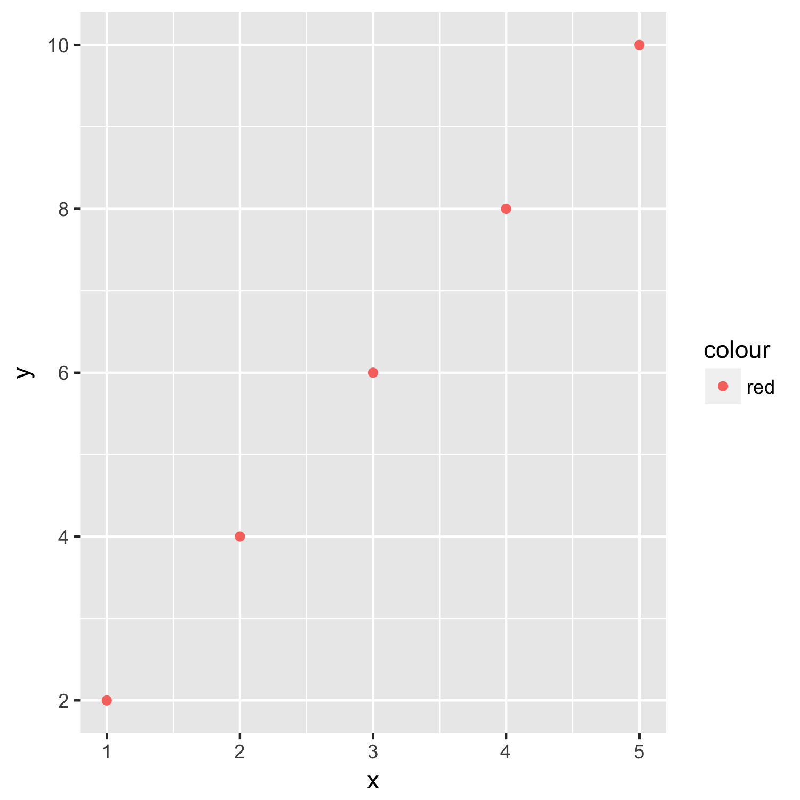

Introduction to Machine Learning using Ruby
Outline:
- What is Machine Learning?
- Programming Languages and Platforms
- Visualizing Machine Learning
- Machine Learning and Statistics
- Prediction
- Classification
- Neural Networks
What is Machine Learning?
ML is an artificial intelligence technique
Two kinds of artificial intelligence:
- Semantic
- Connectionist
ML is a subset of connectionist AI
- Deep Learning and Reinforcement Learning
- Data Mining
- Big Data
- Analytics, Prediction, Classification
Programming Languages and Platforms
- LISP
- Python
- R
- TensorFlow
- PyTorch
- Gluon
So why Ruby?
Visualizing Machine Learning
Start with a formula (in this case y = 2x and then plot the points...
y = 2x
The relationship between x and y (in this case y = 2x) is known in advance, allowing y to be determined for any x. But what if you had all the points, but you didn't know the relationship?

Determining the relationship between
x and y builds a model of that relationship.
You might want to come up with the exact
relationship, which would take a lot of computation power and
a lot of arithmetic.
But you might not care about
the exact relationship, only about a general model. It
depends what you are trying to do...
Prediction
Classification
Prediction
For y = 2x:
- x = 2, y = 4
- x = 10, y = 20
- x = 50, y = ?
- x = 350, y = ?
Prediction is trivial.
Prediction is difficult.
Linear Regression allows for prediction.
Classification
Example: suppose admission to a
university program is based on the combined score of a verbal
and a written test being greater than 500 points. We know the
model:
(x + y) > 500 ? accept :
reject
Classification in this case is trivial.
Linear Regression allows for classification.
Instead of starting from a known model or relationship and calculating or computing values, which is what much traditional programming does, machine learning starts with data, and then figures out an approximate model or relationship between the data points. In this sense, machine learning is data science, and so can be thought of in terms of OSEMN (Obtain, Scrub, Explore, Model, iNterpret).
Machine Learning falls under the "Model" category. Machine learning models data in order to accomplish tasks like prediction and classification.